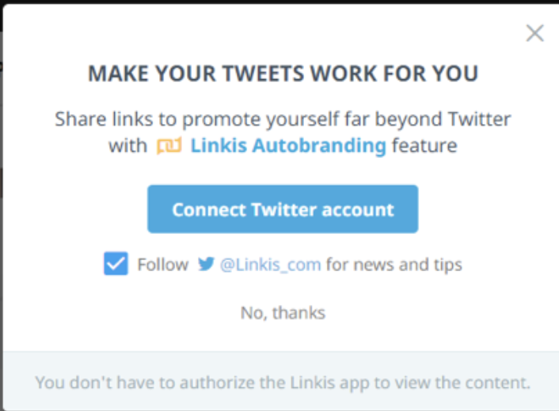
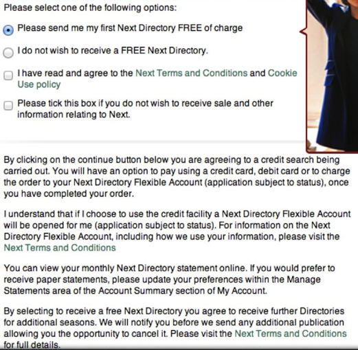

The previous example you've just experienced is called Interface Interference.
- Interface Interference refers to any obstacles, distractions, or disruptions in a user interface that hinder the user's ability to accomplish their tasks efficiently and effectively.
- In the previous example, by overlooking the Interface Interference pattern on the website—leaving that box checked—you unknowingly agree to receive personalized ads, which can lead to additional costs or losses for you.
Solution:
1. You can uncheck the pre-selected boxes, e.g., the “Enable Personalized Ads” box.
2. You can leave or report the websites that use similar Interface Interference
Real-world example #1:
The site opens this pop-up, ironically on an article about Dark Patterns. The big blue button allows the user to connect their twitter account, but the option the follow the site’s twitter is already checked. If users click 'Connect Twitter Account', @Linkis_com promotion ads will appear in their twitter account

Real-world example #2:
Real-world example #2: On Next.co.uk, the radio button for a free first Next directory is pre-selected. However, if users don’t read the fine print, they may unwittingly consent to a credit check and the opening of a credit account. This account sends brochures four times a year, each costing £3.75, despite being typically free from other businesses.
